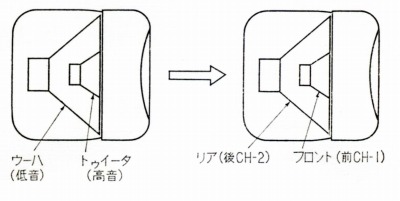
 (EAH-400)
(EAH-400)4チャンネルヘッドフォン
４チャンネル（以下4ＣＨと表記します）ステレオは1970年代前半のオーディオ界を揺るがした台風のような存在でした。CDやカセットテープのように規格が統一されず複数の規格*が対立したこと、当時の技術水準が高品位の４チャンネルステレオを実現する水準ではなかったことなどもあり、70年代後半には少数の例外を除き、まるでなかったもののような扱いを受けました。
管理人は、その当時の直接の体験はありませんが、当時のオーディオ誌をみるとその熱狂ぶりがうかがいしれます。1970年代前半は、スタックス以外のコンデンサー型ヘッドフォンが多数登場したり、ヤマハのオルソダイナミック型に代表される動電全面駆動型の流行、エレガによる希土系磁石の採用など、ヘッドフォンに多くの発展があった時期であり、もし４チャンネルステレオがなかったらもう少し当時のオーディオ誌にヘッドフォン関連の資料が多く取り上げられたのではと思うほどです。
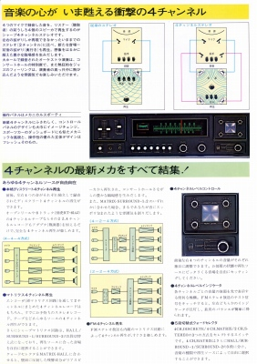
(シャープ＝オプトニカの4ＣＨステレオのカタログ）
この4ＣＨステレオに関連して、何とかヘッドフォンでその音を再生できないかとの要望があり、1970年頃から4ＣＨ対応のヘッドフォンが国内各社から発売されました。これらのヘッドフォンについては現状では対応するソースの入手が困難なため、当初はこのサイトでは取り上げない予定でしたが、しらべてみると技術的に問題が多いためか各社の工夫の入る余地が通常のヘットホンより多かったのでしょう、ユニークなデザインの製品が多く、結局収録することにしました。
*複数の規格
アメリカのジャイバーが開発した、Ｌ・Ｒ2チャンネルの信号からL+0.xR、R+0.xL、L-0.xR、R+0.xR、の４つの信号を生み出すマトリックス方式で、QS（サンスイ）、QM（東芝）、ADF（松下）、SQ（ソニー）など、ディスクリート4チャンネル方式でCD-4（ビクター）、UD-4（コロムビア）など。ある程度の統一は行われたが、それでもマトリックス方式で、QSをベースとしたRMとSQ、ディスクリート方式でCD-4が残った。
�T.4ＣＨ対応ヘッドフォンの構造別種類
4ＣＨ対応ヘッドフォンの構造は以下の４つのタイプがありました。
�@スピーカーを完全に独立して4つ配置したもの
スピーカーによる４チャンネルステレオにならい、4つの小型スピーカーを独立して設置するヘッドフォンです。1970年6月にアメリカの「オーディオ」誌に掲載された4ＣＨヘッドフォンの概念がこのタイプでした。左右のカプセルに2つのスピーカーを分離して設置し、耳元の開口部で音を合流させる考え方です。アメリカではエレクトロボイスが特許実施権を取得したのですが、実際の製品化があったかは不明です。日本ではホシデンが1971年10月にDH-22-Qで近い概念の製品を発表しています。しかし音道設計がいかにも難しそうで、主流とはなりませんでした。
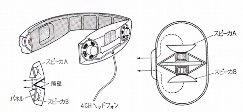
（Ｊ.フィクスラー考案の4ＣＨヘッドフォン）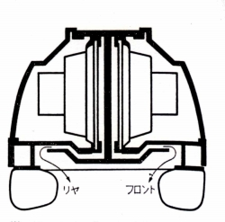
（ホシデンのDH-22Qの片耳断面図）
�A２ウェイ型ヘッドフォンの流用
1970年代前半には特性改善の為、２ウェイ型を採用したコーン型ヘッドフォンがかなりありました。この本来、低音・高音用に用意された2つのスピーカーを、4ＣＨ用に流用したヘッドフォンです。概念としては下記のようになります。本来4つのスピーカーを同じグレードでそろえるのが本道ですので、簡単に作れにもかかわらずこれも主流とはなりませんでした。著名なメーカーにはあまり例がないようです。唯一それらしきものはテクニクス（現 パナソニック）のEAH-400で90�oバラカーブコーン+60�oポリエステルコーンという構成です。なお同ブランドのもう１台の4ＣＨヘッドフォンEAH-404は50�oユニット4本の一般的な構成です。
(EAH-400)
�B２つの同じユニットを横に並べたもの
1970年11月にビクターが世界で初めて商品化した4ＣＨヘッドフォンQTH-V7がこのタイプです。イヤパッド内部に同じユニットを2つ横に並べる関係上、必然的に横長のデザインになります。このQTH-V7は４チャンネル専用でしたが、同社が出した普及機、4HP-V5は2チャンネルと4チャンネルを切り替えるスイッチを備えていました。この2ＣＨ/4ＣＨ兼用型が各社が出した最も普及した4ＣＨヘッドフォンでしょう。4つのスピーカーを同じグレードでそろえる意味で正統的？な製品です。
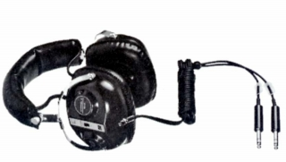
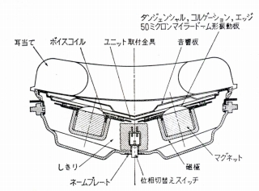
（QTH-V7/4HP-V5の構造）
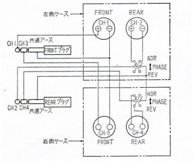
（QTH-V7の外部構造/結線）（QTH-V7は2ＣＨ/4ＣＨ切替はできず、位相切替スイッチを持つ）
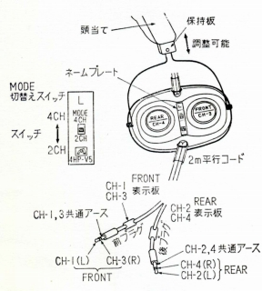
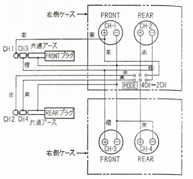
（4HP-V5の外部構造/結線）（他社製品）
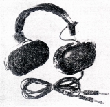
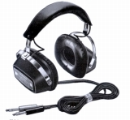

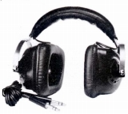
�C２つの同じユニットを縦に並べたもの
日本のメーカー以外では、アメリカのコスも4ＣＨヘッドフォンを作りましたが、同社はイヤパッド内部に同じユニットを2つ縦にに並べるタイプの製品を作りました。ユニットをカプセル内で前後に配置することで、リアチャンネルを実現したようです。なおコスはリヤ用ユニットを小口径にした変則の横長タイプの4ＣＨヘッドフォン（Phase/2+2）も作っていました。
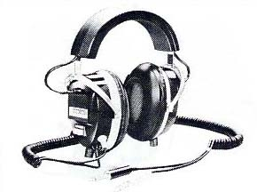
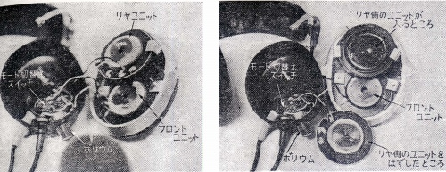
(KOSS 2+2)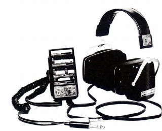
4ＣＨステレオ自体は消えましたが、スピーカーやカートリッジの位相管理、そしてカートリッジの高域特性の向上に寄与したそうです。4ＣＨヘッドフォンも今回わかったことですが、ヘッドフォンの発展に寄与したのかもしれません。ビクターのQTH-V7は、1970年の時点で50ミクロン厚と現在からみればずいぶん原始的ですが、ドーム型振動板を採用しています。ビクターの従来モデルは1965年発表のSTH-1の流れを汲むコーン型振動板のヘッドフォンでした。QTH-V7の振動板を通常のステレオヘッドフォンに流用したのがSTH-2000だったそうです。そうした意味で4ＣＨヘッドフォンはコーン型振動板からドーム型振動板への移行の推進役となったのかもしれません。
�U.4ＣＨヘッドフォンの末裔
4ＣＨステレオは1970年代後半に急速に衰退し、4ＣＨヘッドフォンも同時に消滅しました。しかし完全にこの系統のヘッドフォンが消えた訳ではありません。
�@サラウンドヘッドフォン
1980年代後半あたりから、ホームシアターの概念が成立しました。映画館のような立体音響を目指す機運がおこったのです。その初期に家庭用に普及したのが「ドルビーサラウンド」でした。実は「ドルビーサラウンド」は4ＣＨステレオのマトリックス方式の一種です。かつての苦い記憶があった為か、主要なヘッドフォンメーカーは参入しませんでしたが、マランツ及びシャープがサラウンドヘッドフォンを出しています。
マランツのHP-1DBはエレガの2ウェイ型を流用したと思われる機種で、4ＣＨヘッドフォンでは�Aと�Cの要素を持った製品です。シャープは当時の大画面テレビ競争の最中に、サラウンドプロセッサー内蔵を売りにしていた時期があったため、
VO-H20という自前のヘッドフォンを用意しました。形式的には4ＣＨヘッドフォンの�Bに属する機種でした。
その他にAKGがK270、K280などドライバーユニットを片チャンネルあたり縦に2本使用したダブルユニットモデルを流用し、K290というサラウンドヘッドフォンを発表しています。
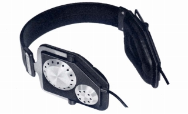
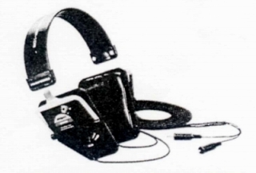
（左がベースモデルと思われるエレガのDR-232CH、右がマランツのHP-DB)
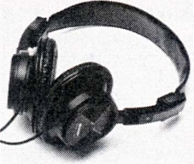
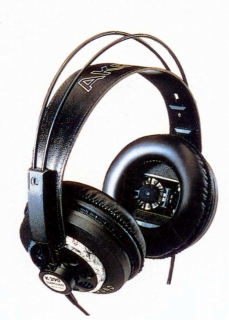
（左がシャープのVO-H20、右がAKGのK290)
�A2000年以降のマルチダイアフラムヘッドフォン
国内ではヘッドフォンによるサラウンドは、ワイヤレスモデルによりバーチャル再生が主流になっていますが、海外製品では2000年以降も複数ユニットを使用したヘッドフォンが作られています。moonrabbitさんが2005/5/11のブログでこうしたモデルを紹介していますが、ユニットも片チャンネル3つ以上ある製品がアジアでは作られているようです。
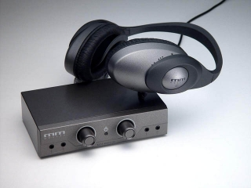
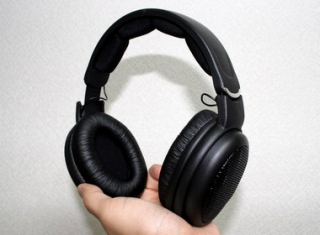
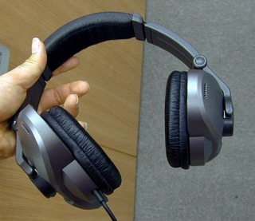
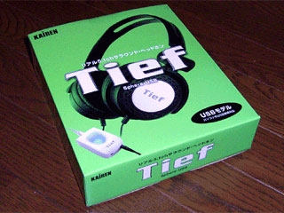
�V.4ＣＨヘッドフォンのリスト
（国内メーカー）
ASHIDAVOX アシダヴォックス（アシダ音響） ST-4000R
DIATONE ダイヤトーン（三菱電機） SH-95
ELEGA エレガ(藤木電器 現 エレガアコス) DR-129Q DR-163Q DR-174Q
HOSIDEN（ホシデン） DH-22-Q TH-32-Q (*)
Lo-D ローディ（日立家電） HB-404
OPTONICA オプトニカ（シャープ） HP-500
OTTO オットー（三洋電機） E-450X
PANASONIC パナソニック（旧 松下電器産業） EAH-400 EAH-404
PIONEER パイオニア SE-Q404
SANSUI サンスイ QH-44
SONY ソニー DR-41
VICTOR ビクター QTH-V7 4HP-V5 4HP-1000
YAMAHA ヤマハ QHP-400
（海外メーカー）
KOSS (U.S.A) コス K/2+2 PRO/5Q Phase/2+2
SUPEREX (U.S.A) スーペレックス QT-4B
(*)この「TH」という型番は資料の誤字の可能性が高い。海外サイトでDH-32-Qという4chヘッドフォンを見かけた。上記の区分では「�A２ウェイ型ヘッドフォンの流用」に該当するタイプのようだ。